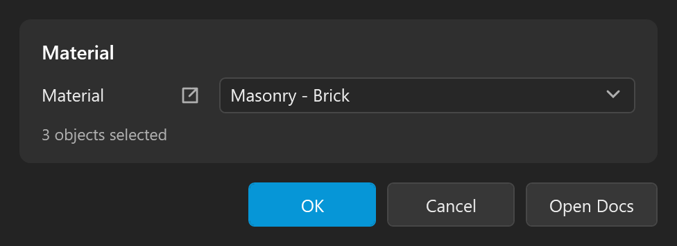

Assign Material
| Ouverte par | MTASSIGN, une commande enfant de Materials; avec elle, MTMATCH et MTSHOW |
| Requiert | AutoCAD 2025 ou plus récent pour Windows |
| Licence | Licence publique générale GNU v3 |
Description
Dites à DynALisp de quoi est fait une hachure ou un contour qu'il n'a pas dessiné : un détail reçu, une hachure à vous. Le matériau le suit quand il est copié ou déplacé.
Utilisation
- Tapez MTASSIGN et sélectionnez les hachures et les contours fermés.
- Choisissez le matériau, puis OK. None l'enlève.
- MTMATCH copie le matériau d'un objet sur d'autres.
- MTSHOW dit de quoi sont faits les objets choisis.

Bon à savoir
- Ce que dessinent Quick Draw et Quick Shape a déjà son matériau.
- Seuls les hachures et les contours fermés prennent un matériau.
- Un U l'annule.
Noms des commandes et alias
Les noms courts sont des alias de la commande : modifiez-les dans Dyl-Suite. Les rangées marquées ↳ sont ses variantes, lancées par leur nom court.
| Commande | Alias | Nom |
|---|---|---|
| ↳ Pst-MaterialAssign | MTASSIGN | Material Assign |
| ↳ Pst-MaterialMatch | MTMATCH | Material Match |
| ↳ Pst-MaterialShow | MTSHOW | Material Show |